MLT End Term19 questions100 marks9 MSQ · 6 SA · 4 MCQafternoon
Elapsed 00:00
Q1MSQ5 marksselect all that apply
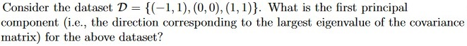
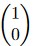
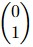
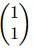
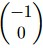
Comprehension passage - the questions below it refer to this
Based on the above data, answer the given subquestions.
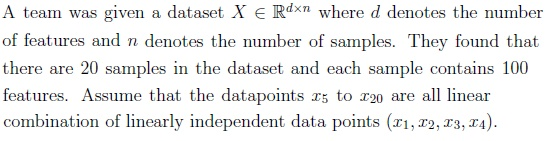
Q2MCQ5 marks
Suppose the team applies linear PCA on the dataset and reconstructs the data points with zero error using k principal components (directions). For which value of k the reconstruction error would become zero?
1
2
3
4
10
100
Q3MSQ6 marksselect all that apply
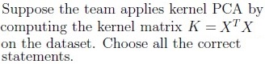
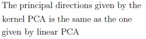
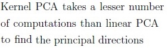
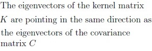
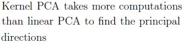
Q4MSQ5 marksselect all that apply
Consider Lloyd’s algorithm used for k-means clustering and choose the correct statements:
K-means algorithm may get stuck at local minima.
It guarantees finding the optimal clustering(global minima) in every run.
If the resources are limited and the data set is huge, it will be good to prefer K-means over K-means++.
In practice, k should be as large as possible.
Q5SA6 marks
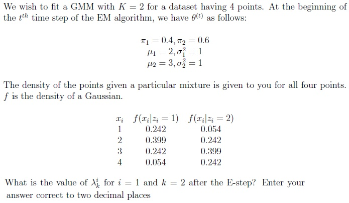
Q6SA6 marks
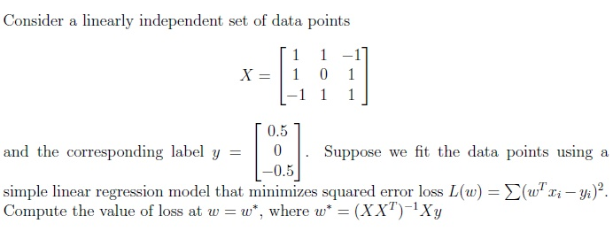
Comprehension passage - the questions below it refer to this
Based on the above data, answer the given subquestions.
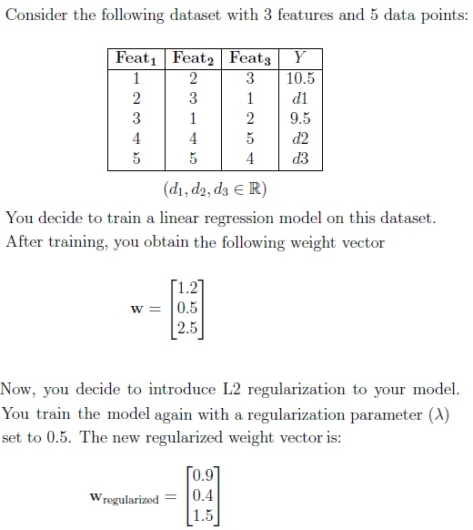
Q7MCQ3 marks
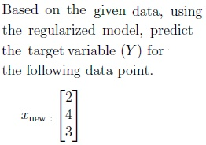
7.9
12.2
11.9
None of these
Q8MCQ3 marks
If you further reduce the regularization parameter (λ) to zero. What would be the new prediction for the target variable?
7.9
12.2
11.9
None of these
Q9SA6 marks
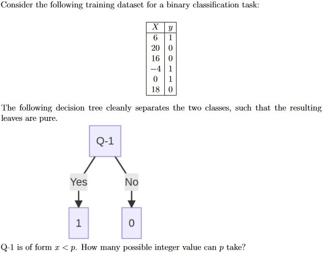
Q10SA5 marks
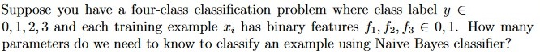
Q11MCQ5 marks
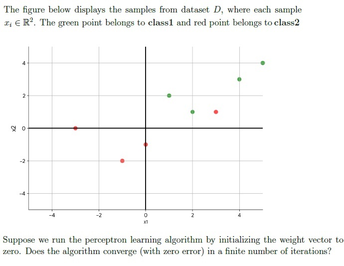
Yes, it will converge.
No, it will never converge.
Insufficient data
Q12SA6 marks
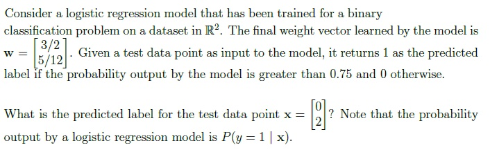
Comprehension passage - the questions below it refer to this
Based on the above data, answer the given subquestions.
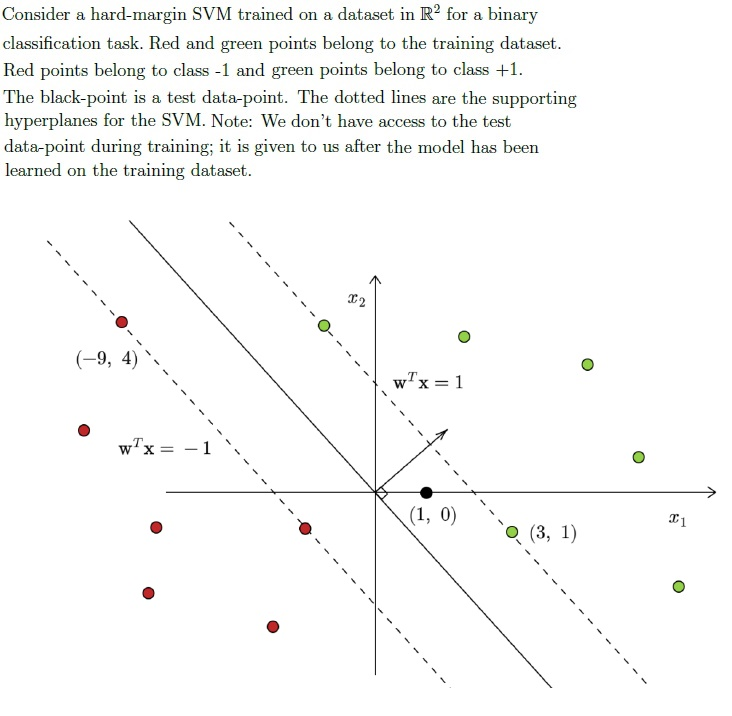
Q13MSQ6 marksselect all that apply
What is the equation of the decision boundary? Select all options that are correct.
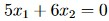
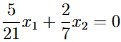
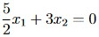
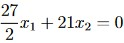
Q14SA5 marks
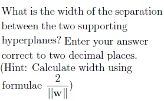
Q15MSQ6 marksselect all that apply
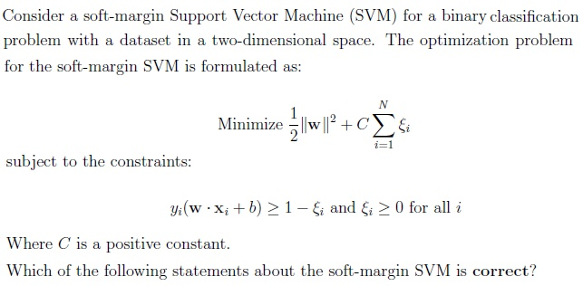
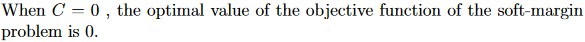
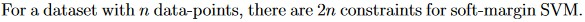
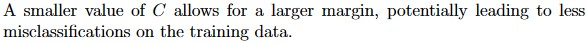
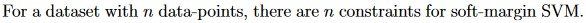
Q16MSQ6 marksselect all that apply
Which of the following statements are correct?
Underfitting models have high bias and low variance.
Overfitting models have low bias and high variance.
Generally, weak learners in the random forest tend to underfit.
If the performance of each estimator in the bagging algorithm is almostidentical, the benefit of using bagging to combine them may be minimal or insignificant.
In random forests, multiple decision trees (estimators) are trainedsimultaneously, allowing for parallel processing and faster model training.
Q17MSQ5 marksselect all that apply
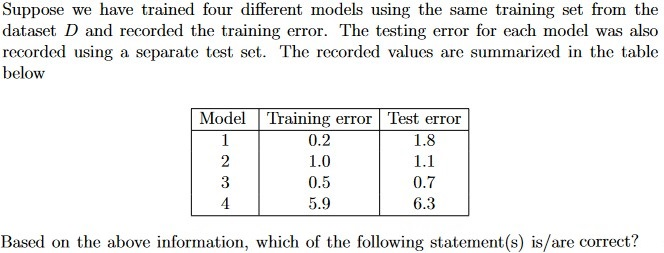
Model 4 tends to overfit.
Model 4 tends to underfit.
Model 1 tends to underfits.
Model 1 tends to overfits.
Q18MSQ5 marksselect all that apply
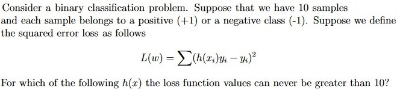
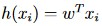
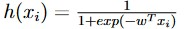
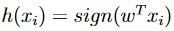
Q19MSQ6 marksselect all that apply
Choose all the correct statements about neural networks
It can not be used for both regression and classification problems
It can have more than two hidden layers
The activation functions have to be non-linear to separate not linearlyseparable data points
Each neuron in the neural network may or may not have bias associated with it